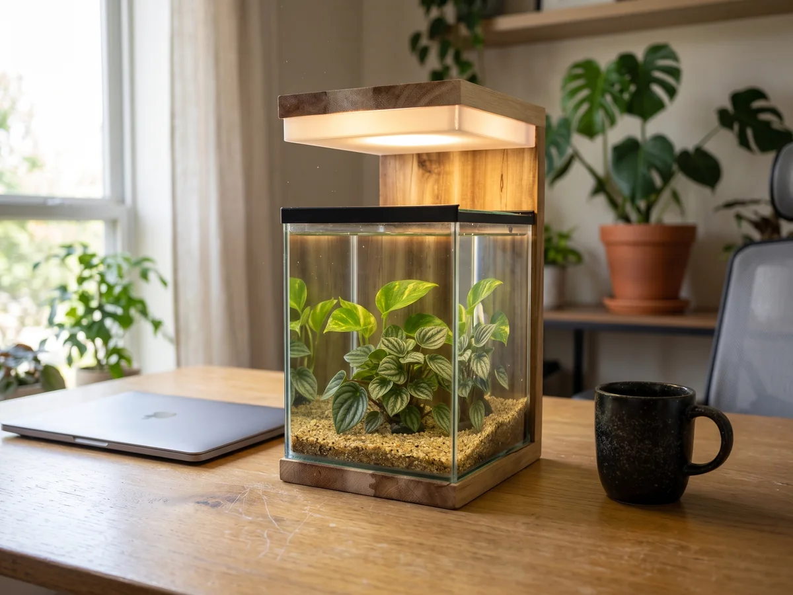
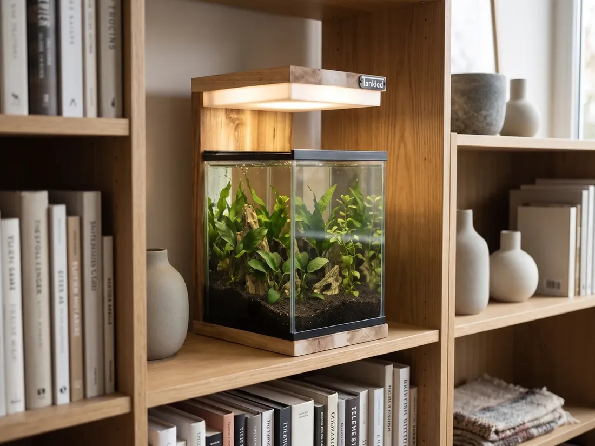

Masaüstü bitki saksısı: ofis ve çalışma masası için bitkiler

Çalışma masasındaki küçük bir bitki, ekran başında geçen saatleri daha yeşil ve daha sakin kılar. Ancak ofisler çoğu zaman pencereden uzak, klimalı ve az ışıklı ortamlardır; bu da pek çok bitki için zorlu bir yaşam alanı demektir. Doğru bitki ve doğru masaüstü bitki saksısı ile bu sorun kolayca aşılır.
Az ışıkta yaşayan ofis bitkileri
- Pothos (salon sarmaşığı): Çok dayanıklıdır, az ışıkta bile büyür.
- Peperomia: Küçük boyu ve etli yapraklarıyla masa için idealdir.
- Pilea: Yuvarlak yapraklarıyla modern bir görünüm verir.
- Fittonia: Renkli yapraklıdır; nemi sevdiği için kapalı bir cam içinde en iyi hâlini alır.
- Java yosunu ve marimo: Su içinde yaşayan, neredeyse bakım istemeyen yeşillikler.
Daha fazla bitkiyi ışık ve bakım ihtiyaçlarıyla bitkiler rehberimizde bulabilirsiniz.
Neden ışıklı saksı?
Ofiste en büyük sorun ışık eksikliğidir. Kendi LED aydınlatması olan bir saksı, bitkinin ihtiyaç duyduğu ışığı pencereye bağlı kalmadan sağlar. Mesai bitiminde ışığı kapatmanız ya da bir zamanlayıcıya bağlamanız yeterlidir. Cam gövde ise klimanın kurutucu etkisinden bitkiyi korur ve nemi dengeler.
Masaüstü saksı seçerken
- Boyut: Klavye ve ekranın yanına sığacak kompakt bir ölçü (ör. 14 × 14 cm taban).
- Su taşmasına karşı güvenlik: Drenajlı düzen ve kapalı tabanlı cam, masaya su sızmasını önler.
- Görünüm: Ahşap gövde, ofis mobilyalarıyla doğal bir uyum sağlar.
- Çok amaçlılık: Aynı ürün akşamları abajur, isterseniz betta akvaryumu olarak da kullanılabilir.
Kurumsal hediye olarak bitki saksısı
El yapımı, ahşap gövdeli ve içinde canlı bir bitki olan ışıklı saksı; yeni ofis açılışları, çalışanlara ve iş ortaklarına verilecek hediyeler için akılda kalıcı ve uzun ömürlü bir seçimdir. Toplu siparişler için bizimle iletişime geçebilirsiniz.
Sukulent ve kaktüs yetiştirmenin ayrıntıları için ışıklı bitki saksısı rehberimizi okuyun.
Ankara'da el yapımı akvaryum
Ostim'deki atölyemizde doğal masif ahşaptan mobilyalı ve dekoratif akvaryumlar üretiyoruz. Türkiye'nin 81 iline ve yurt dışına kargo yapıyoruz. Ölçünüze özel tasarım için bize ulaşın.
WhatsApp ile yazın Koleksiyonu inceleyinDiğer yazılar

Evde balık beslemek: balık akvaryumu kurmaktan bakıma başlangıç rehberi
Evde balık beslemek için balık akvaryumu seçimi, su olgunlaştırma, akvaryum balıkları, yem, filtre, motor ve ısıtıcı: adım adım başlangıç rehberi.
Devamını oku →
Akvaryum camı ve akvaryum tankı: cam akvaryum seçerken nelere dikkat edilir?
Akvaryum camı kaç mm olmalı? Cam akvaryum, akvaryum tankı ve akvaryum kasası seçerken cam kalınlığı, silikon işçiliği, ölçü ve taşıyıcı gövde rehberi.
Devamını oku →
Karides akvaryumu: neocaridina ve amano karides için kurulum ve bakım rehberi
Karides akvaryumu nasıl kurulur? Neocaridina (red cherry) ve amano karides için akvaryum boyutu, su değerleri, filtre, bitki, yem ve üreme: adım adım rehber.
Devamını oku →